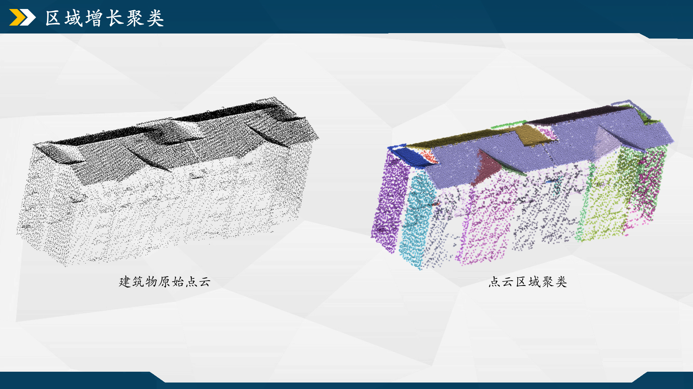

摘要：
法向量估计 上一节中，输入数据经底部填充后可视作完整的建筑物点云。到了这一节，目标是把点云按某种特征聚类分割为各个区域，方便面片模型的构造，从而以更抽象、简化的方法来描述实体。
从这一块开始，后面的大部分内容都是对PolyFit算法的照搬，官方的调用示例可以去看下这个页面[14] ，它的源码主要封装在compute_confidences和hypothesis这两个文件中。我为了方便调试和理解，把其中用到的摘抄到自己的程序里，这里面熟悉的功能我会捋一下代码逻辑，不太懂的部分我就跳了。
下图是源自[15] 的法向量概念图，感觉他讲得挺明白的，法向量的概念可以抽象成对函数在某一点上的微分。
以前用GPT和这篇知乎回答[16] 记下法向量估计的步骤，可参考一二。
代码实现 代码实现在RegionSegProcess的EstimateNormals()。调用CGAL的PCA法向量估计，先定义个std::pair<Kernel::Point_3, Kernel::Vector_3>的二元对象，前者存点坐标后者存法向量。邻域点的个数用_num_kSearch存储，定义在头文件的私有变量那，默认初值是18，感觉估算得太慢/不需要太平缓的值，就【Alt+F12】速览定义把值改小些。
1 2 3 4 5 6 7 8 9 10 11 12 13 14 15 16 17 18 19 20 21 22 23 24 25 26 27 28 29 30 31 32 33 34 35 36 37 38 39 40 41 42 43 44 void RegionSegProcess::EstimateNormals (const PointCloud & cloud, PointCloud & cloud_normal) std::list<PointVectorPair> list_normal; for (int i = 0 ; i < cloud.size (); ++i) { PointVectorPair pair_temp; pair_temp.first = cloud.point (i); list_normal.push_back (pair_temp); } CGAL::pca_estimate_normals <CGAL::Parallel_if_available_tag>(list_normal, _num_kSearch, CGAL::parameters::point_map (CGAL::First_of_pair_property_map <PointVectorPair>()) .normal_map (CGAL::Second_of_pair_property_map <PointVectorPair>())); #if 0 std::list<PointVectorPair>::iterator unoriented_points_begin = CGAL::mst_orient_normals (list_normal, _num_kSearch, CGAL::parameters::point_map (CGAL::First_of_pair_property_map <PointVectorPair>()) .normal_map (CGAL::Second_of_pair_property_map <PointVectorPair>())); list_normal.erase (unoriented_points_begin, list_normal.end ()); #endif cloud_normal.clear (); cloud_normal.add_normal_map (); for (const PointVectorPair& pair : list_normal) cloud_normal.insert (pair.first, pair.second); }
代码实现_常用的法向量估计 再记录一些常用的法向量估计方法：
1 2 3 4 5 6 7 8 9 10 11 12 13 14 15 16 17 18 19 Eigen::Vector4f GeometryCal::FittingPlane (const std::vector<Eigen::Vector3f>& points) if (points.size () < 3 ) return Eigen::Vector4f (-999 , -999 , -999 , -999 ); Eigen::MatrixXf matrix (points.size(), 3 ) ; for (int i = 0 ; i < points.size (); ++i) matrix.row (i) = points[i].transpose (); Eigen::Vector3f center = matrix.colwise ().mean (); Eigen::MatrixXf mat_center = matrix.rowwise () - center.transpose (); Eigen::Matrix3f covariance = (mat_center.transpose () * mat_center) / points.size (); Eigen::SelfAdjointEigenSolver<Eigen::Matrix3f> solver (covariance) ; Eigen::Vector3f normal = solver.eigenvectors ().col (0 ); float d = -normal.dot (center); return Eigen::Vector4f (normal (0 ), normal (1 ), normal (2 ), d); }
（2）PCL调用NormalEstimationOMP所构造的方法。cloud_pcl是类型为pcl::PointXYZ的输入点云，normals为估计的法向量。
1 2 #include <pcl/search/kdtree.h> #include <pcl/features/normal_3d_omp.h>
1 2 3 4 5 6 7 8 9 10 int k = 30 ;pcl::NormalEstimationOMP<pcl::PointXYZ, pcl::Normal> ne; ne.setInputCloud (cloud_pcl); pcl::search::KdTree<pcl::PointXYZ>::Ptr tree (new pcl::search::KdTree<pcl::PointXYZ>) ; ne.setSearchMethod (tree); ne.setKSearch (k); ne.setNumberOfThreads (10 ); pcl::PointCloud<pcl::Normal>::Ptr normals (new pcl::PointCloud<pcl::Normal>) ; ne.compute (*normals);
（3）加权最小二乘计算平面系数。先用树结构获取邻近点下标及平方距离，按平面方程构造矩阵方程。比较特别的是里面的权重阵，根据平方距离给一个反距离权重，范围在（0，1]，示例中设置1e-2范围内的邻近点权重固定为1，超过该范围外的点离搜索点越远权重越小。
1 2 3 4 5 6 7 8 9 10 11 12 13 14 15 16 17 18 19 20 21 22 23 24 25 26 27 28 29 30 31 32 33 34 35 36 37 38 39 40 41 42 43 #pragma omp parallel for for (int i_p = 0 ; i_p < cloud.size (); ++i_p) { pcl::PointXYZ p_search; p_search.getVector3fMap () = cloud[i_p].point; std::vector<int > indices; std::vector<float > distances; tree.nearestKSearch (p_search, k, indices, distances); Eigen::MatrixXf X (indices.size(), 3 ) ; Eigen::VectorXf Z (indices.size()) ; Eigen::VectorXf W (indices.size()) ; for (int i = 0 ; i < indices.size (); ++i) { int idx = indices[i]; const Eigen::Vector3f& p_neighbor = cloud[idx].point; float x = p_neighbor.x () - p_search.x; float y = p_neighbor.y () - p_search.y; float z = p_neighbor.z (); X (i, 0 ) = x; X (i, 1 ) = y; X (i, 2 ) = 1.0f ; Z (i) = z; W (i) = (distances[i] < 1e-4 ) ? 1.0f : (1e-4 / distances[i]); } Eigen::MatrixXf W_diag = W.asDiagonal (); Eigen::MatrixXf XtWX = X.transpose () * W_diag * X; Eigen::VectorXf XtWZ = X.transpose () * W_diag * Z; Eigen::VectorXf coeffs = XtWX.ldlt ().solve (XtWZ); float d = -(coeffs (0 ) * p_search.x + coeffs (1 ) * p_search.y + coeffs (2 ) * p_search.z); planes[i_p] = Eigen::Vector4f (coeffs (0 ), coeffs (1 ), coeffs (2 ), d); }
这是邻域点数为18的法线可视化结果，一般设置的邻近点个数越多，估算的法线朝向越趋向一致，换言之是更容易聚类出大块的区域，但也可能会让原本不同朝向的区域聚合到一起，理论上要按点密度取个合适的值。
区域聚类 有了法向量数据，开始对点云进行区域增长聚类。PolyFit代码里用的是区域增长方法（论文中用的是RANSAC区域聚类），效果不错我直接照搬。该方法基于种子点逐步扩展的思想，通过迭代合并具有相似属性的邻近信息（如法向量、颜色或强度）来形成连续区域。这里聚类依赖的属性信息就是点的法向量，它的聚类步骤猜测如下：
代码实现 具体的代码实现在RegionSegProcess的RegionGrowing()。区域增长聚类后能得到一个二维容器regions，表示各个聚类区域内点的索引。为了方便可视化显示，给cloud_seg附加颜色和分区序号的属性，通过遍历regions中的索引值从cloud_normal中拷贝相应的点，并赋予同一区域的点相同颜色。CGAL的聚类方法还能导出所有未满足聚类条件的点的索引，我把这一类点return了。
1 2 3 4 5 6 7 8 9 10 11 12 13 14 15 16 17 18 19 20 21 22 23 24 25 26 27 28 29 30 31 32 33 34 35 36 37 38 39 40 41 42 43 44 45 46 47 48 49 50 51 52 53 54 55 56 57 58 59 60 61 62 63 64 65 66 67 68 69 70 71 72 73 PointCloud RegionSegProcess::RegionGrowing (const PointCloud & cloud_normal, PointCloud & cloud_seg) Neighbor_query neighbor_query ( cloud_normal, _num_kSearch, cloud_normal.point_map()) Region_type region_type ( cloud_normal, _max_distance_point2plane, _max_accepted_angle, _min_region_pointNum, cloud_normal.point_map(), cloud_normal.normal_map()) Region_growing region_growing ( cloud_normal, neighbor_query, region_type) CGAL::Timer timer; timer.start (); std::vector<std::vector<std::size_t >> regions; region_growing.detect (std::back_inserter (regions)); timer.stop (); std::cout << "有 " << regions.size () << " 个分割区域已生成，运行耗时 " << timer.time () << " 秒" << std::endl; cloud_seg.clear (); cloud_seg.add_normal_map (); cloud_seg.add_property_map <int >("region_map" ).first; cloud_seg.add_property_map <unsigned char >("red" ).first; cloud_seg.add_property_map <unsigned char >("green" ).first; cloud_seg.add_property_map <unsigned char >("blue" ).first; for (int i = 0 ; i < regions.size (); ++i) { const unsigned char r = static_cast <unsigned char >(std::rand () % 256 ); const unsigned char g = static_cast <unsigned char >(std::rand () % 256 ); const unsigned char b = static_cast <unsigned char >(std::rand () % 256 ); for (const auto & index : regions[i]) { PointCloud cloud_piece; cloud_piece.add_normal_map (); const auto & key = *(cloud_normal.begin () + index); cloud_piece.insert (cloud_normal, key); cloud_piece.add_property_map <int >("region_map" , i).first; cloud_piece.add_property_map <unsigned char >("red" , r).first; cloud_piece.add_property_map <unsigned char >("green" , g).first; cloud_piece.add_property_map <unsigned char >("blue" , b).first; cloud_seg.insert (cloud_piece, *cloud_piece.begin ()); } } std::vector<std::size_t > unassigned_items; region_growing.unassigned_items (std::back_inserter (unassigned_items)); PointCloud cloud_unassigned; for (const auto index : unassigned_items) { const auto & key = *(cloud_normal.begin () + index); const Kernel::Point_3& point = get (cloud_normal.point_map (), key); cloud_unassigned.insert (point); } return cloud_unassigned; }

主函数调用 主函数run.cpp中，通过以下代码实现点云的法向量估计、区域聚类。
1 2 3 4 5 6 7 8 9 10 11 12 RegionSegProcess obj_seg; PointCloud cloud_normal; obj_seg.EstimateNormals (cloud_input, cloud_normal); PointCloud cloud_seg; obj_seg.RegionGrowing (cloud_normal, cloud_seg); PointCloud cloud_seg_copy (cloud_seg) ;obj_pre.Coordination2Original (cloud_seg_copy); obj_file.SaveCloud (path_output, obj_file.GetFileName (file_path) + "_region" , cloud_seg);
聚类结果受点的法向量、点到拟合平面的最大距离限制、点间的法向量夹角限制、聚类的最小点数这四个参数影响，对它们的设置一并放到RegionSegProcess的ChangeParameter()中进行。
另外，如果要处理大型建筑物，建议把法线间的最大角度阈值调大，聚类点数最小值调大，从而使聚类结果中只留有大区域点云。
参考文献&引用 [1] https://3d.bk.tudelft.nl/liangliang/ [2] https://3d.bk.tudelft.nl/liangliang/publications/2017/polyfit/polyfit.html [3] https://www.youtube.com/watch?v=_0brfDFkIkc [4] Linfu X ,Han H ,Qing Z , et al. Combined Rule-Based and Hypothesis-Based Method for Building Model Reconstruction from Photogrammetric Point Clouds [J]. Remote Sensing, 2021, 13 (6): 1107-1107. [5] Nan L , Wonka P .PolyFit: Polygonal Surface Reconstruction from Point Clouds[C]//International Conference on Computer Vision.IEEE, 2017. https://github.com/Kitware/CMake/releases/download/v3.29.3/cmake-3.29.3-windows-x86_64.zip https://boostorg.jfrog.io/artifactory/main/release/1.85.0/source/boost_1_85_0.7z https://github.com/CGAL/cgal/releases/download/v5.6.1/CGAL-5.6.1.zip https://gitlab.com/libeigen/eigen/-/archive/3.4.0/eigen-3.4.0.zip https://scipopt.org/download.php?fname=SCIPOptSuite-9.0.0-win64-VS15.exe https://zenodo.org/records/4390295#.Y0eIodJBxuV https://www.zhihu.com/question/277599635/answer/2149719454 https://zhuanlan.zhihu.com/p/668272208 [14]https://doc.cgal.org/latest/Polygonal_surface_reconstruction/index.html#Chapter_PolygonalSurfaceReconstruction https://zhuanlan.zhihu.com/p/90858099 https://zhuanlan.zhihu.com/p/668272208